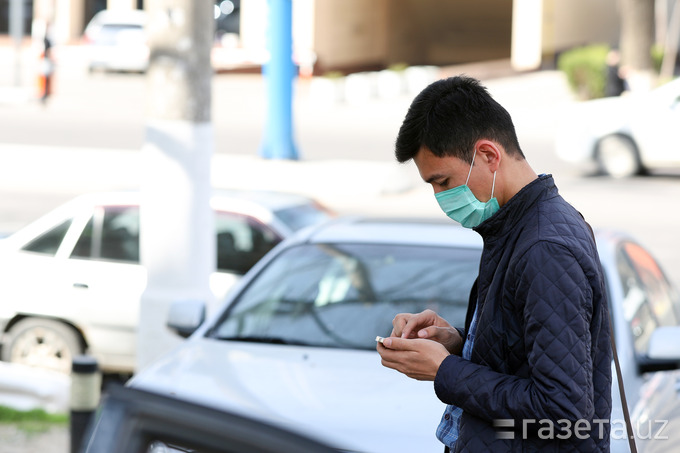
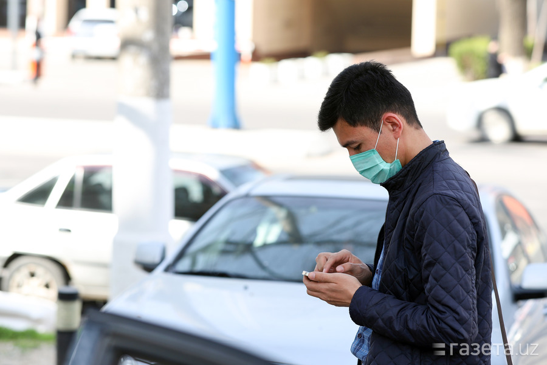
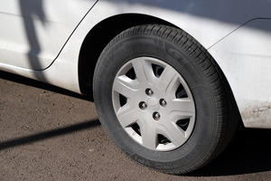
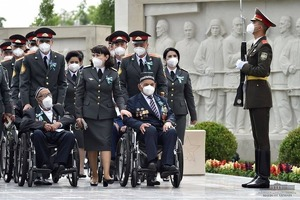
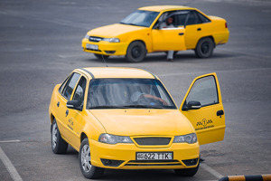
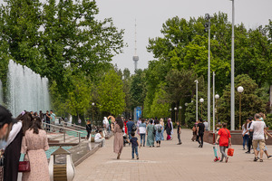
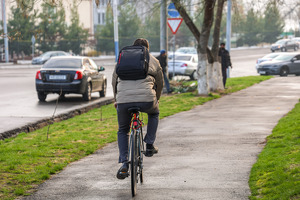

Собираться более трех человек запретили
В такое время стоило бы запретить представителям сносов домов приходить и озвучивать свои условия.В данное время у всех стресс и паника.А, тут представители объявляют о предстоящем сносе твоего жилья.Это правильно вообще?Или карантин для них не существует?
Posted On: 2020-03-27T16:37:00
Posted By: Клара Умархужаева
А работающим на работу ходить можно?У нас на фирме итак всего два человека осталось.Нам как быть?Или на работу тоже ходить нельзя?
Posted On: 2020-03-27T16:46:00
Posted By: Cash Tayler
Сразу ввели бы все эти ограничения и всех прибывших из зарубежа сразу принудительно изолировали бы на 2-х недельный карантин, не было бы зараженных вирусом.Ситуация слегка упущена и вирус начал гулять.Но, надеюсь, принятые меры помогут в скором времени одолеть этот вирус.
Posted On: 2020-03-27T17:15:00
Posted By: Djora Abdumavlyanov
'строгое соблюдение социальной дистанции между людьми в 2 метра' а как Вы дистанцию отмерять будете?вот например регулируемый пешеходный переход на метро Чилонзар.там почти 60 метров ширина проезжей части.чтобы перейти дорогу нужно на разделительной полосе кучковаться.каким макаром там соблюсти интервал в 2 метра?там разделительная полоса как раз 2 метра.--- если вводятся такие ограничения — тогда нужно запретить пользоваться личным транспортом вообще, а водителям грузовых машин передвигаться исключительно ночью.и после разрешить пешеходам переходить улицу В ЛЮБОМ МЕСТЕ, ПОД ЛЮБЫМ УГЛОМ.а на автобусы для медиков поставить проблесковые маячки и обязать их(а также остальной служебный транспорт) передвигаться исключительно с включенной сиреной и маячком — дабы предупредить пешеходов..
Posted On: 2020-03-27T17:25:00
Posted By: Flyer
Что за двойные стандарты?По городу ездят на машинах, сидят в такси и салонах авто, которые не проходят дезинфекцию, но на улице на свежем воздухе запрещают сближаться?Что за бред?Если карантин, то для всех.
Posted On: 2020-03-27T17:40:00
Posted By: Санжар R
'В общественных местах также ограничивается одновременное присутствие более трех человек' а вот только что ТГ канала КоронавирусИнфо пришло — какие места считаются общественными ================ какие места считаются общественными ===============
Posted On: 2020-03-27T18:17:00
Posted By: Flyer
'.. запрещено собираться в общественных местах более трех человек..'- перечислите, пожалуйста, какие объекты считаются общественными?
Posted On: 2020-03-27T18:19:00
Posted By: Валентин Артемов
не маски нужны, а респираторы
Posted On: 2020-03-27T18:30:00
Posted By: Игорь Рок
Так у нас это правило лет 20 уже есть.С 1999 года, никто не отменял
Posted On: 2020-03-27T18:46:00
Posted By: Sarvar Khodjaev
Уже сегодня мужа (инвалида 2 группы, последствия инсульта, глухой), выехавшего на своём личном авто велике ( так как его ноги не носят почти) недалеко от дома на базар за продуктами остановил сотрудник мвд у махалли Катта Корасув и записал его данные для выписки штрафа, не смотря на увечевания мужа, что маска у него с собой, и одеть хотел перед входом на базар.Вот такие пироги.А ведь нам за 65, сидеть бы дома, да некого просить, купить продукты.
Posted On: 2020-03-27T20:07:00
Posted By: Тамара Аристархова
Надо наказывать таких слишком рьяных активных патриотов из МВД,.. нельзя что-ли было навстречу пойти?Уже и инвалидов кошмарит.пусть руководство обратит внимание.. на каждый случай надо отдельно рассматривать..
Posted On: 2020-03-27T20:59:00
Posted By: Busan Vag
МВД я считаю, конкретно в этом случае, перегибает палку, к инвалидам нужно по человечески относиться, человек даже на ногах стоять не может, перед ним на коляске, пенсия маленькая, помочь не кому, можно было бы и исключение сделать в данном случае, хотя бы разовое, — лучше бы сами с теми же продуктами (милиция) таким людям помогали ('защитнички', — даже не знают чем простые люди живут, — тем более, инвалиды)!
Posted On: 2020-03-27T21:13:00
Posted By: 外人
Только за продуктами и лекарствами.А как и где мне собаку выгуливать?
Posted On: 2020-03-27T21:27:00
Posted By: Владислав Немтинов
Дааа, вот такие пироги..
Posted On: 2020-03-27T22:29:00
Posted By: Анвар
Есть несколько значений слова 'предписание' -1.Распоряжение, 2.Приказ 3.Рекомендация и еще несколько значений…как трактовать именно здесь?Каждый же поймет по своему!Можно как-то более точнее выразить данное положение!
Posted On: 2020-03-27T22:40:00
Posted By: Лёлька Глазырина
На окраине автостоянки примыкающей к Корзинке (ст. метро.Чиланзар) ближе к проезжей части собираются непонятно зачем люди человек 8-10 что то записывают на бумажке (скорее всего маклеры которые дислоцировались в Интегро) и расстояние между ними даже не 1 метр и что толку от указаний о дистанции не менее 2 метра (ее не соблюдают).
Posted On: 2020-03-27T23:07:00
Posted By: Андрей Андреев
а где мой многокилометровый комментарий — потерялся из-за падения сайта?)в кратце — считаю необходимым запретить любой частный транспорт, а грузовые машины обязать развозить товары исключительно ночью.зачем мы должны это сделать?ради выживания нации.--- если убрать автомобили с дорог(за исключением скорой помощи, милиции и служебных автобусов) — мы сможем разрешить переходить пешеходам в ЛЮБОМ месте.--- сейчас ПДД работает ПРОТИВ нас.люди вынуждены толпится на узких пешеходных переходах, пропуская машины.отдайте всю проезжую часть пешеходам — пусть ходят по середине дороги, на максимальной дальности друг от друга.все равно дороги полупустые, а в ПДД есть штраф за переход дороги в неположенном месте.
Posted On: 2020-03-27T23:41:00
Posted By: Flyer
В связи с карантином рекомендовано, не выходить из дома, не собираться более трёх человек.До карантина к домам м-ва Куйлюк-2 ежедневно, кроме понедельника, Икбол на Дмамасе привозил овощи и фрукты.Теперь Икбол не приезжает, на арбе привёз мужчина к домам овощи и фрукты.Участковый его прогнал, хотя мужчина был в маске и перчатках.Общественный транспорт на Куйлюкский базар не ходит.До сих пор не организована продажа овощей, фруктов, продуктов у жилых многоквартирных домах.Нам что теперь не только от вируса, но и с голоду помирать?
Posted On: 2020-03-28T08:50:00
Posted By: Kira Lion
Вчера посмотрел по сети видео за 26 марта.В районе автостанции Тошкент.Там скопилась толпа областных, не могущих разъехаться по своим областям.Таксисты заряжали по 450 тысяч за место.Там народу была тьма!Общественный транспорт не работает.Просто праздник для заразы.И стоят там милиционеры и ничего не предпринимают.Что?Нельзя было огранизовать транспорт и развести людей до дома?!Они готовы были заплатить по 150 тыщ за место!Стлько автобусов стоят на приколе!Обработать хлоркой и развести их!Кто то с телевидения, двое ребят организовывали таксистов, умоляя их отвезти женщин и детей за 150-200 тысяч сум!Безобразие!Как там сейчас обсоит дело не знаю, надеюсь власти позаботились о своих гражданах.
Posted On: 2020-03-28T09:14:00
Posted By: Иff Купидоноff
На Юнусабадском базаре продавцам запретили продавать картошку.И точку сбыта сделали в одном месте.Продают по 2700, с лимитом не более 5 кг.Очередь настолько огромна, что люди стоят часами там.Все рядом друг с другом.Милиция рядом всё это видит.О каких правилах 'не собираться более трех человек' когда на рынке сотня стоит вплотную друг к другу???
Posted On: 2020-03-28T19:00:00
Posted By: Makis Nesterov
Makis Nesterov у вас хоть она есть в наличии и по такой цене, в Алмалыке на рынке она стоит 5000-5500 и то её ещё найти нужно.вот так вот и живём
Posted On: 2020-03-29T11:55:00
Posted By: Сергей Кобец
а говорили и показывали по телевизору эту злощасную картошку- что перебоев с ней не будет- были горы мешков с картошкой и луком- вот так товарищи!
Posted On: 2020-03-30T15:40:00
Posted By: Татьяна Волкова







Content Date: 2020-03-27
Download Date: 2021-05-13
Document ID: L0C04BZRP